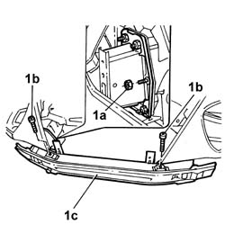
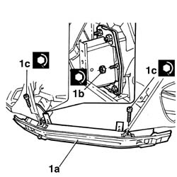

7210A18 FRONT CROSSMEMBER
- Path
- Procedures > 72 panels and frames > 7210 REMOVING REFITTING > 7210A structural elements (front part) > 7210A18 FRONT CROSSMEMBER
- Kind
- repair procedure (removal / refitting; the operation number is the code)
- Applies to
- all engines; all production periods
- Interactive page
- https://sloeber94.github.io/elrnDB-lThss/en/#/501065
Applies to: all engines; all production periods
Applies to: all engines; all production periods
 Removing
Removing
 Refitting
Refitting1. Undo the fixing nuts (1a) and bolts (1b) and remove the crossmember (1c).

Applies to: all engines; all production periods
Refitting
Removing1. Place the crossmember (1a) in position and tighten the nuts (1b) and bolts (1c) to torque.
 | Value - daNm | Fastening | Component | Ø |
|---|---|---|---|---|
. | 2.5 | Nut | FRONT CROSSMEMBER | M8 |
| Value - daNm | Fastening | Component | Ø |
|---|---|---|---|---|
. | 2.5 | Bolt | FRONT CROSSMEMBER | M8 |
